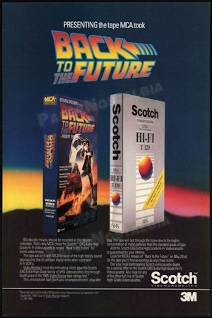

Why We Came Back
87 Video is back, and we're bringing the popcorn. Are you feeling nostalgic for some analog? Do you miss rewinding your favorite tapes? After years of being closed down, we've reopened, and we're giving you back all your favorite hits of the 80's and 90's.
Located right in the middle of the city, we're opening our doors 7 days a week to make sure you can pop in that copy of Rambo whenever you feel like it. Our prices start at only $5 for rentals, so what are you waiting for? Get down here!
Genres
We got the scares, the love, and the bullets you need for any occasion on the couch!
- Horror: You ever look around and wonder where the good Horror went? So do we. Here at 87 video we have Jason, Freddy, and even Ghostface on tap ready to stick a bladed object into everyone in the room.
- Romance: Look, we all have times when we need a good hug. Don't feel bad. Take a glance at our Romance section for all the smootching you can handle. We won't tell anyone.
- Action: Obviously the most important part of any video store. From Marty and the Doc taking a trip to the 50's, to Rambo blowing up half of an entire continent.
And much MUCH more...
Formats
VHS - DVD - BETA - LASERDISC